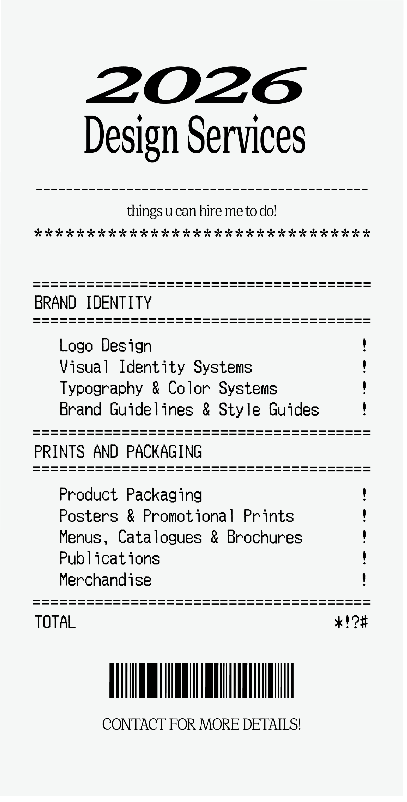

✻ Communication Design (BFA), Parsons School of Design NYC
✻ Open to freelance and full-time opportunities
My practice spans Branding and Identity Design, Publication design, Web and Digital products, and more. Drawing inspiration from culture, vernacular aesthetics, and personal narratives, I am interested in seeing how design can make space for multiple perspectives and lived experiences. By blending visual storytelling with thoughtful systems, I aim to create work that is simultaneously conceptually rich and visually precise.

Contact
ingklptn@gmail.com
LinkedIn: Wanwanat (Ing) Klewpatinond
(PDF Portfolio Available Upon Request)